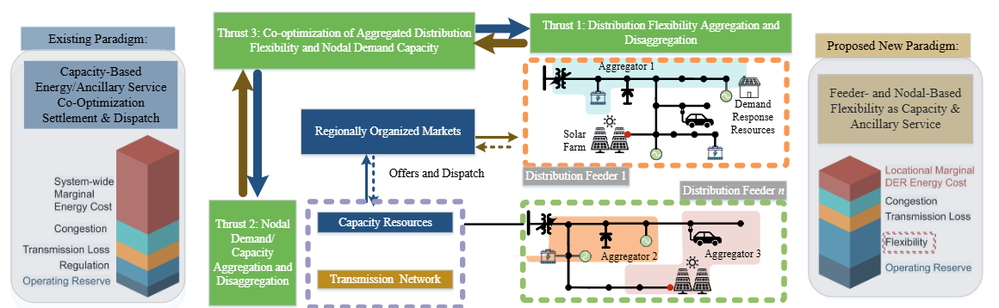
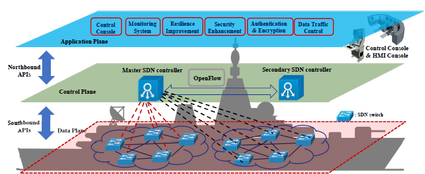

We Appreciate Support from Our Sponsors
Federal


State, Foundations, and Industry


Selected Projects
CAREER: Redesign of Ancillary Services via Aggregation and Disaggregation of Information, Flexibility, and Capability, National Science Foundation, 2023-2027
|
 |
Uncertainties by fast-growing penetration of distributed energy resources, proliferation of electrified transportation, and climate change intertwine and amplify challenges posed on power system reliability. Consequently, widespread and prolonged outages have been occurring increasingly more frequently and severely.
Recent outages, such as the 2021 winter Texas blackout and the 2022 summer Ohio outages, illustrate that conventional ancillary services are ineffective and inadequate to address imminent reliability challenges. Collaborating with regional transmission organizations, this project aims to fundamentally redesigns the
conventional scheme of energy-ancillary service co-optimization with system-wide requirements (i.e., a resource planning-based problem) into a novel capacity-flexibility co-dispatch framework with nodal demand/capacity/flexibility composite models (i.e., a real-time control-based problem).
First, flexibility provided by both distributed energy resources and electrified transportation is mathematically modeled and effectively aggregated Second, the proposed nodal-level co-dispatch and redispatch is granular, rigorous, and effective since the control policies are established as theoretical co-optimization problems, converted through transformations and information aggregation, and effectively solved both precisely with guaranteed performance and approximately using real-world
T&D system data Finally, the proposed granular control is also cost-aware with multi-scale, multi-domain cost and price models explicitly incorporated in the modeling process
|
Unifying and Securing Naval SCADA Networks through Scalable SDN, Office of Naval Research, 2021-2024
|
 |
Enabled by the fast development of digital and communication technologies, the scale, capability, and complexity of modern SCADA systems are ever-increasing. Specifically, the following issues remain as increasingly pressing gaps in shipboard SCADA systems.
Scalability: Complexity of the SCADA architecture increases with the number of components (e.g., servers, master stations, and remote units), amount of data exchange with firewalls, and added features (e.g., control rules, communication protocols, and user interfaces). Network effectiveness, accessibility, and performance verification to accommodate the expanding SCADA
architecture are challenging Compatibility: Most commercial-off-the-shelf (COTS) technologies, such as vendor-specific components, software, and protocols, are proprietary and probably even exclusive. Therefore, seamless integration of multi-vendor COTS technologies remains time-consuming for implementations of new systems and necessary for retrofits with existing systems Resiliency: Navy vessels are expected to withstand the loss of some (possibly critical) subsystems, quickly respond and reorganize, and maintain maximum combat capability. The above-discussed compatibility issue with proprietary interfaces and rigid network settings remains a major technical challenge to maximize vessel survivability Security: SCADA networks are intrinsically vulnerable due to their interconnected and automated nature. As an islanded system, naval vessels are less concerned with Internet-based attacks. However, other cyber vulnerabilities, such as loss of availability, integrity, confidentiality, and authentication, could also cause significant, cascading effects on navy vessels
This project aimed at designing and utilizing novel, open, and scalable SDN techniques to enhance the resiliency/survivability, scalability/compatibility, and security of naval SCADA networks. Together with Penn State University, the project team also successfully carried out engaging, mentoring, and training both undergraduate and graduate students with desired skills and hands-on experience on naval applications.
|
|